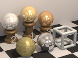
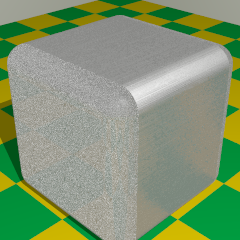
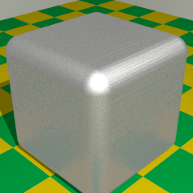

{kind=link}

 RC3Metal is a library module from the Persistence of Vision Ray Tracer (POV-Ray) Object Collection that defines macros for creating metallic textures. They produce results that are more realistic-looking than the metallic textures in the standard include files and, being parameter-driven, are more flexible. The idea is to have a small number of simple tools for creating a large variety of customized textures, rather than having a large number of fixed textures.
The primary rationale for this module is to automatically adjust the diffuse and ambient settings on metallic finishes in response to the specular reflection level and global illumination.
In addition to basic finishes, some common metal colors are suggested, and blurred reflection, galvanized metal, and a brushed normal are included.
| Key Files | |
|---|---|
| File | Description |
rc3metal.html |
The user manual (this document) |
rc3metal.inc |
The RC3Metal software |
rc3metal.jpg |
Sample output |
rc3metal.pov |
A demonstration scene file |
rc3metal_brushed1.png |
Illustrations for the user manual |
rc3metal_brushed2.png |
|
READMEnnnnnn.html
(where nnnnnn is a 6-digit number)
|
Important information that you need to know |
| Other Files | |
| File | Description |
rc3metal_brushed.pov |
A brushed normal demonstration scene file |
rc3metal_cc-lgpl.png |
Support files for the user manual |
rc3metal.css |
|
rc3metal_demo.css |
Demonstration files |
rc3metal_demo.pov | |
rc3metal_demo_blur.ini | |
rc3metal_demo_colors.ini | |
rc3metal_demo_compg.ini | |
rc3metal_demo_compm.ini | |
rc3metal_demo_compt.ini | |
rc3metal_demo_galv.ini | |
rc3metal_demo_index.html | |
rc3metal_description.txt |
A brief description of RC3Metal |
rc3metal_keywords.txt |
A list of keywords |
rc3metal_prereqs.txt |
Prerequisites (empty file) |
rc3metal_thumbnail.jpg |
Illustration for the user manual |
cc-LGPL-a.png |
Administrative support files |
Versionnnnnnn.js
(where nnnnnn is a 6-digit number)
|
|
#include "rc3metal.inc"
Including the file more than once is unnecessary, but harmless.
#version less than 3.7), I recommend setting the following prior to using the macros:
#declare RC3M_Ambient = 0;
Requires POV-Ray version 3.5 or later.
All file names in this module and all global and local identifiers defined in rc3metal.inc comply with the Object Collection revised naming standards. The prefixes for this module are “rc3metal” and “rc3m,” including any uppercase and lowercase variations.
The standard include file functions.inc is used by rc3metal.inc.
The following parameters may be modified by declaring them prior to #including rc3metal.inc.
| Parameter | Type | Description | Default |
|---|---|---|---|
RC3M_Albedo |
float/Boolean |
If true and if the POV-Ray version (or #version) is 3.7 or later, then the albedo keyword will be used in the finishes.
Warning: Make sure your 3.7 installation is up-to-date, or this feature may work poorly or not at all. |
yes |
RC3M_Ambient |
color | Set this to whatever value you use for #default { finish { ambient } }. If you are using radiosity with a version of POV-Ray older than 3.7 (or with #version less than 3.7), I recommend setting this to 0. If you do not change the default finish ambient, you may ignore this parameter. |
rgb 0.1 |
RC3M_Debug |
float/Boolean | If true, the finish and pigment macros will write information to the debug stream. | off |
RC3M_Diffuse |
float | Set this to whatever value you use for #default { finish { diffuse } }. If you do not change the default finish diffuse reflection, you may ignore this parameter. |
0.6 |
RC3M_Seed |
float | A seed for stochastic (pseudorandom) effects. | 0 |
RC3M_Ambient and RC3M_Diffuse are used by the macros as guidelines for setting appropriate ambient values on the finishes.
Returns a pigment and a metallic finish. This macro may be placed within a texture{} statement. quick_color is set as described under RC3Metal_Pigment().
c_Color: Specularity: Diffuse_part:
Returns an object with blurred reflection. It uses the technique described in the POV-Wiki Knowledgebase, but applied in a manner that prevents runaway calculations when there are mutually reflecting surfaces.
o_Object: t_Base:
RC3Metal_Normal_blur() should be used instead.)
Blurriness: Scale: Samples: Returns a texture with blurred reflection. The technique is described in the POV-Wiki Knowledgebase.
Warning: Use of this macro with mutually reflecting surfaces may result in a catastrophic slowdown in rendering, due to a runaway proliferation of rays to be calculated. This can be mitigated by using the macro RC3Metal_Blur() or by doing several renders with RC3Metal_Blur_t() and averaging the images with image-editing software. If doing several renders, be sure to pass 1 for Samples and set RC3M_Seed to a different value for each render.
t_Base: RC3Metal_Normal_blur_t() should be used instead.)
Blurriness: Scale: Samples: Returns a metallic finish.
Specularity: Diffuse_part:
Returns a galvanized texture.
c_Dull: c_Shiny: Dull: Shiny: Dark:
Light:
Shine: Returns an object with a texture that has a normal and a blurred reflection. It uses the technique described in the POV-Wiki Knowledgebase, but applied in a manner that prevents runaway calculations when there are mutually reflecting surfaces.
o_Object: t_Base: Blurriness:
RC3Metal_Blur().
Scale: Samples: n_Normal:
bump_size should be doubled.
Returns a texture that has a normal and a blurred reflection. The technique is described in the POV-Wiki Knowledgebase.
Warning: Use of this macro with mutually reflecting surfaces may result in a catastrophic slowdown in rendering, due to a runaway proliferation of rays to be calculated. This can be mitigated by using the macro RC3Metal_Normal_blur() or by doing several renders with RC3Metal_Normal_blur_t() and averaging the images with image-editing software. If doing several renders, be sure to pass 1 for Samples and set RC3M_Seed to a different value for each render.
t_Base: Blurriness:
RC3Metal_Blur_t().
Scale: Samples: n_Normal:
bump_size should be doubled.
Returns a pigment with quick_color set to compensate for the settings in RC3Metal_Finish(). This works well for quality settings 2 through 5, but results in an oversaturated color at quality settings 0 and 1.
c_Color: Specularity: Returns a metallic texture. quick_color is set as described under
RC3Metal_Pigment().
c_Color: Specularity: Diffuse_part:
Returns a color converted to a 3-D vector (i.e., without the filter and transmit components).
c_Color: | Identifier | Type | Description | Value |
|---|---|---|---|
RC3M_fn_Brilliance |
function | Used by the macros to determine finish values as functions of specular reflection.
Unlike the diffuse and ambient adjustments, there is no rigorous physical basis for these functions. If you would like to substitute your own functions, you may |
|
RC3M_fn_Roughness |
function | ||
RC3M_fn_Specular |
function | Used by the macros to determine the specular highlight value as a function of specular reflection. The value returned will be adjusted for albedo. If you wish, you may #undef and redefine this function after including rc3metal.inc.
|
|
RC3M_n_Brushed |
normal | A brushed metal normal similar to that of texture Brushed_Aluminum in textures.inc. The grain is parallel to the x-axis. This normal is smoother where the x-component of the unperturbed surface normal is non-zero.  |
|
RC3METAL_VERSION |
float | The RC3Metal version, in case the caller needs to know. | 1.0 |
The following color values are estimated from hardware from The Home Depot, household articles, illustrations from Metallium, spectral data on the Web (which are never the same from one site to the next), and loose pocket change. They have not been measured; for actual sample measurements, I suggest LightsysIV. N.B. The LightsysIV measurements tend to be about half as bright as corresponding RC3Metal color suggestions.
| Identifier | Type | Notes | |
|---|---|---|---|
RC3M_C_ALUMINIUMRC3M_C_ALUMINUM |
color | Aluminum | |
RC3M_C_BRASS_COOL |
color | A harsh, cold, yellow brass (a doorknob) | The brasses and bronzes are on the light side, so you may want to darken them for an older look. |
RC3M_C_BRASS_LIGHT |
color | A softer, golden-hued brass (a brass-plated binder clip) | |
RC3M_C_BRASS |
color | A deeper, golden-hued brass (a chalice or musical instrument) | |
RC3M_C_BRASS_WARM |
color | A very deep orange brass (some hardware) | |
RC3M_C_BRONZE_NEW |
color | A new, polished bronze with no patina | |
RC3M_C_BRONZE_COOL |
color | Bronze can look like anything. These values are based on articles I have seen in novelty stores and in The Home Depot, but they may well have been painted with fake bronze paint. | |
RC3M_C_BRONZE |
color | ||
RC3M_C_BRONZE_WARM |
color | ||
RC3M_C_CHROME |
color | Electroplated chromium over nickel | |
RC3M_C_COPPER |
color | Brand new copper piping | |
RC3M_C_COPPER_LIGHT |
color | A freshly minted American penny, or packaged copper items | |
RC3M_C_GOLD |
color | A warm gold | |
RC3M_C_GOLD_LIGHT |
color | A yellower gold | |
RC3M_C_NICKEL |
color | Household fixtures | |
RC3M_C_PENNY |
color | An American penny that’s been well-handled, but hasn’t lost its shine; or copper piping that’s been sitting around for a while | |
RC3M_C_SILVER |
color | Silver | |
RC3M_C_SILVER_COIN |
color | Copper-nickel alloy | |
RC3M_C_STAINLESS |
color | Stainless steel (eating utensils) | |
RC3M_C_STAINLESS_WARM |
color | A warmer, lighter-colored stainless steel | |
RC3M_C_STEEL |
color | Steel | |
RC3M_C_ZINC |
color | Screws, hurricane connectors | |
RC3M_C_ZINC_COOL |
color | Old fence post | |
Any identifiers in rc3metal.inc that are not documented in this manual are considered “private” or “protected,” and are subject to change or elimination in a future update.
Included in this distribution is a scene file that demonstrates various features of RC3Metal. Due to the large number of images (more than 100), they have not been pre-rendered. You can create them yourself by rendering each of the .ini files in the distribution. You can then view the demos by viewing the file rc3metal_demo_index.html with your Web browser.
The .ini files are preset to POV-Ray version 3.5. If you have POV-Ray 3.7, you can take advantage of 3.7 improvements by putting Version=3.7 on the command line (or at the end of the command line if you are working from a terminal window).
In order to keep your Object Collection folder uncluttered, you may want to keep the demos in a separate folder. After creating this folder, move all files whose names start with “rc3metal_demo” into it.
A description of each of the demos follows:
rc3metal_demo_blur.ini
RC3Metal_Blur_t().
rc3metal_demo_colors.ini
rc3metal_demo_compg.ini
golds.inc alongside comparable finishes from RC3Metal_Finish().
rc3metal_demo_compm.ini
metals.inc alongside comparable finishes from RC3Metal_Finish().
rc3metal_demo_compt.ini
textures.inc alongside those same textures with the finish component replaced with a comparable RC3Metal_Finish().
rc3metal_demo_galv.ini
Shine values passed to RC3Metal_Galvanized_t().
| Version | Date | Notes |
|---|---|---|
| n/a | 2004 – 2008 |
|
| 1.0 | March 9, 2013 |
|